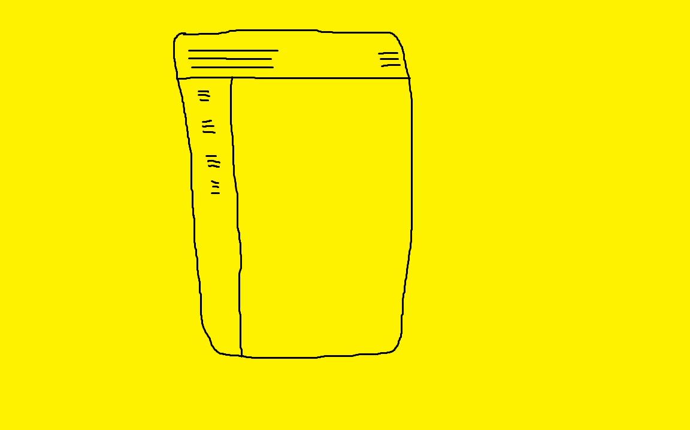

about Henry
hello, my name is Henry. I am seventeen years old now but will be turning eighteen on july twenty-ninth, two thousand and twenty.
my hobbies include:
- riding bicycles
- playing guitars
- reading books
here are the schools I've attended:
- preschool: immanuel lutheran school
- kindergarten - 2nd grade: easton elementary school
- 2rd grade - 8th grade: homeschooled
- 6th grade - 8th grade: classical conversations
- 9th grade - 12th grade: easton high school
I begin my undergraduate studies at st. john's college in annapolis, maryland, this august. I will be working for a bachelor's degree in liberal arts.
projects
I am, in a loose sense of the term, a front end web developer. here are some of the webpages I have made:
complex layout
Henry trivia
facts about me:
- my favorite band is Talking Heads
- other beloved music groups include DEVO, Cage the Elephant, Oingo Boingo, King Gizzard and the Lizard Wizard, Blarf, Clipping, and Aesop Rock
- my favorite song is Once in a Lifetime by Talking Heads
- my favorite album at the moment is either So-Lo by Danny Elfman or The impossible Kid by Aesop Rock
- my favorite number is three. it is a mersenne prime number and appears in the fibonacci sequence
- my favorite video game is kerbal space program
- my favorite book is Zen and the Art of Motorcycle Maintenance by Robert M. Pirsig
- my favorite comedian is George Carlin
- my favorite philosopher is Diogenes of Sinope
- my favorite restaurant chain is Hard Rock Cafe
- I am by all accounts biliterate in english and latin
- I was my high school's homecoming king during my senior year
- I have attended many dances but have never danced at any. when I was homecoming king, I left early with some friends to go to my house and eat s'mores. as luck would have it, I left before the ceremonial dance between the homecoming king and queen. the homecoming queen had to dance by herself
- I do not believe good and true are the same thing
- I have spent the past seventeen months attempting to trisect an angle with euclidean tools, which is considered to be impossible. recently, I have developed a method that allows for the trisection of acute angles with a margin of error of two degrees. my work will not stop until I find a completely accurate method for both acute and obtuse angles
- I love airports and shopping malls. they are the best places on earth
- I consider myself to be a Nondenominational Christian, although I maintain many beliefs of Pastafarianism
contact Henry
here is my contact information if you want to reach me:
- email: henry.d.hills@gmail.com
- click here if you are too lazy to write an email yourself